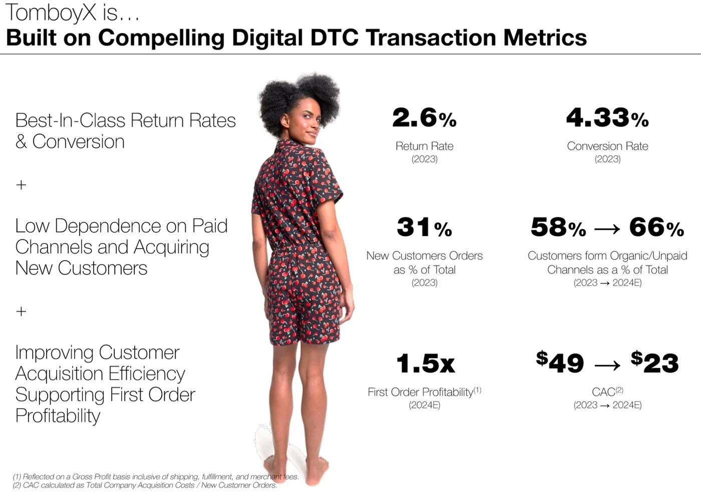

How do you know a story is working?
A company with a round to fill
Four kinds of investor to ask, one after another.
First, the ones who had been there longest
The story had to honour what they felt, and blame no one.

Then, the ones who invest in the world they want
The story had to let them see they were among their own.

Then, the ones who have run companies
The story had to make an unfamiliar business readable.

Last, the syndicates
The story had to get past a screening, to the people who decide.

Each version was written because the round was not yet full.